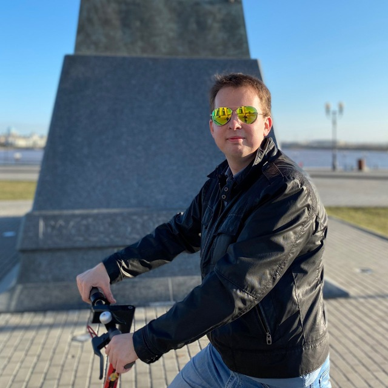

Основатель Юрий Коротин
Всякий орден начинается не с устава, а с человека, которому надоело смотреть, как знание рассыпается по чатам и уходит вместе с людьми.

Основатель Ордена — инженер, выросший из разработки в инженерное лидерство. Восемь доменов Пантеона — не выдумка летописца, а его личная карта: каждый примарх — направление, в котором Основатель прокачивается публично, разбор за разбором.
Метод его прост: лучший способ выучить — вести летопись. Процессы обязаны окупаться, инструменты — измеряться, а восторг допускается только после замера. Он строит агентные конвейеры на LLM и проверяет на себе всё, о чём пишет Когнит, — прежде чем это войдёт в кодекс.
Здесь нет советов с высоты — есть путь, задокументированный в реальном времени. Ошибки входят в летопись наравне с победами: так честнее и так полезнее.